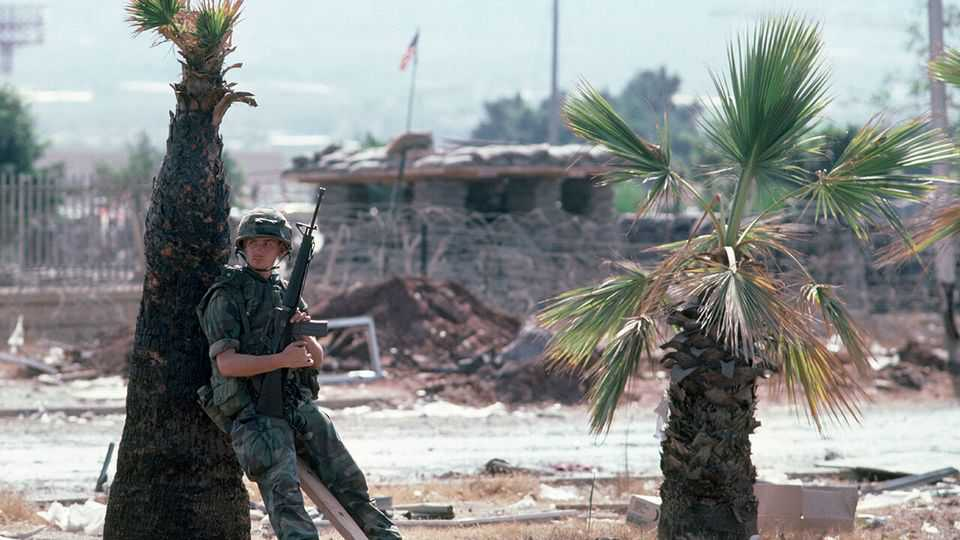

How Lebanon’s civil war shaped America’s rivalry with Iran
A new book argues a murder in 1984 can help you understand the Middle East today

Oct 29th 2026
FEW PLACES have fallen farther from their glory days. Beirut, Lebanon’s capital, was once a small corner of freedom in the Arab world, known for dance parties and louche living. Then in 1975 it descended into a vicious sectarian conflict. Israel and Syria occupied swathes of its territory. America sent marines to Beirut, and Iran cultivated Hizbullah, a Shia militia. By the end of the civil war in 1990 around 350,000 people, a tenth of the population, had been killed or wounded.
Into this carnage stepped Malcolm Kerr (pictured below), who became president of the American University of Beirut (AUB) in 1982. Kerr’s parents, who taught at AUB, had raised him on its leafy campus overlooking the Mediterranean from west Beirut. “I figure there’s a 50-50 chance that I’ll get bumped off,” Kerr confided to his daughter. But the university was a symbol of Lebanon’s cosmopolitanism, and he wanted to help keep it running. Less than two years later he was shot dead outside his office.
Kerr’s assassination is now little remembered. But Kim Ghattas, a journalist who grew up in wartime Beirut, puts it at the centre of her absorbing account of the war and its aftermath. Part murder mystery, part geopolitical history, “The Best Kind of American” uses the story of Kerr’s murder to explore how a small country’s conflict shaped America’s and Israel’s struggle against Iran.
For all its glamour, pre-war Lebanon was a powder keg. The government was weak; armed groups flourished. In 1970 it became the main base of Yasser Arafat’s Palestine Liberation Organisation (PLO), after it was expelled from Jordan. As the PLO’s conflict with Israel spread to Lebanon, tensions grew between the country’s religious sects. In 1975 the Wall Street Journal compared Beirut to Belfast: the city had become divided between the mostly Muslim west and the mostly Christian east.
AUB was “a microcosm of Lebanon”, writes Ms Ghattas. Students and faculty included right-wing Christians and downtrodden Shias. When Kerr arrived, there was cause for optimism. The PLO was leaving Lebanon for Tunisia, and America was preparing a peace plan. Those hopes would soon be dashed. In September 1982 Lebanon’s president-elect was assassinated, and Christian paramilitaries slaughtered Palestinians in refugee camps, with the tacit approval of Israeli troops.
Meanwhile the Iranian regime, which came to power in the Islamic revolution in 1979, spied an opportunity to use Lebanon in its struggle against Israel and America. Iranian operatives turned the Beqaa valley into a stronghold for their proxy Shia militias. In time these groups morphed into Hizbullah. In 1983 they bombed the American embassy and Marine barracks, killing hundreds. Kerr’s murder the following year was Hizbullah’s first high-profile political assassination and, Ms Ghattas suggests, part of a Shia takeover of west Beirut.
Many of these events read like a prelude to the present. Hizbullah’s creation was championed by Ali Khamenei, Iran’s president and later its supreme leader, who was killed on the first day of America’s and Israel’s war with Iran this year. Binyamin Netanyahu first appears as a suave young diplomat on American TV in 1982, defending Israel’s invasion of Lebanon. Today Israeli troops are there again; Mr Netanyahu went on to become Israel’s longest-serving prime minister. America’s failure in Lebanon was one of the superpower’s many botched efforts to fix the region.
This timely book has a few heroes, mostly the academics and activists who fought for peace. Like Kerr, many of them died prematurely. Those who wrecked the Middle East—in the region and beyond—would do well to learn from them. ■